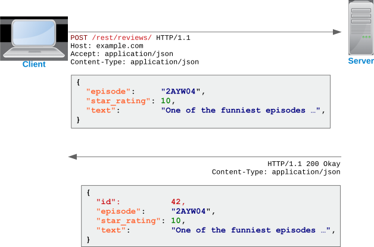

Moderne Webservices werden immer mehr als REST-Webservices entworfen und es scheint
fast so, als wäre SOAP vielerorts gar kein Thema mehr. In dieser Stelle gehen wir
daher näher auf REST ein und zeigen, wie es mit Java funktioniert.
Lernziele dieser Einheit
Nach Abschluss dieser Einheit kannst du …
Die Unterschiede zwischen SOAP und REST sowie die
spezifischen Eigenheiten von REST erklären.
Typische Anwendungsfälle von REST erkennen und von SOAP abgrenzen.
Erklären, was eine WADL-Beschreibung ist und welche Vorteile sie bietet.
WADL-Dateien in SoapUI importieren und fremde Webservices damit testen,
Eigene REST-Webservices mit den JAX-RS-Annotationen von Java implementieren.
Das AJAX-Prinzip anwenden, um REST-Webservices aus clientseitigem JavaScript heraus aufzurufen.
Entfernte REST-Webservices mit JAX-RS aus Java heraus aufrufen.
Netbeans zur Generierung der hierfür benötigten Webservice-Stubs verwenden.
Bei den URLs für einen REST-Webservice wird häufig zwischen Collections und Ressourcen
unterschieden. Eine Collection ist dabei immer eine Sammlung von Einträgen, die als Ganzes
abgerufen werden kann. Oftmals können beim Abruf dann noch Query Parameter mitgegeben
werden, um die Liste einzugrenzen.
Eine einzelne Ressource erkennt man daran, dass in der URL ihr Schlüsselwert enthalten ist.
Im Gegensatz zu den Collections schickt der Server dann genau ein Objekt mit den Daten der
angeforderten Ressource.
Die Anlage von Ressourcen erfolgt, indem ihre JSON-Repräsentation als POST-Anfrage an
die Collection geschickt wird. Der Server speichert daraufhin den Eintrag und schickt
die gespeicherten Daten, nun um die Key-Werte angereichert, zurück.

Im Gegensatz zu SOAP besitzen REST-Webservices oftmals keine formale Beschreibung.
Viele REST-API-Anbieter liefern daher vorgefertigte SDKs zum Aufruf ihrer Services
mit verschiedenen Sprachen. Im Java-Umfeld hat man sich stattdessen das
WADL-Format
als eine Art „WSDL für beliebige Webanwendungen” überlegt. Es beschreibt die URLs
eines Webservices und mit welchen HTTP-Methoden sie aufgerufen werden.
⚛️
Welche URLs besitzt der Webservice?
⚛️
Welche URL-Parameter können einer URL mitgegeben werden?
⚛️
Welche HTML-Formularfelder können an die URL geschickt werden?
⚛️
Welche Daten können mit POST, PUT oder PATCH an die URL geschickt werden?
⚛️
Welche HTTP-Statuscodes kann die Antwort enthalten?
⚛️
Welche Daten werden bei welchem Statuscode zurückgeschickt?
Beispiel
<application xmlns="http://wadl.dev.java.net/2009/02"
xmlns:xs="http://www.w3.org/2001/XMLSchema">
<!--
Hier könnten XML-Schema-Anweisungen stehen, mit welchen die Struktur
der ausgetauschten Daten formal definiert wird, wenn der Webservice
XML als Datenformat verwenden würde.
-->
<grammars/>
<!--
Die Basis-URL des Webservices lautet
http://localhost:8080/TheXFiles/rest/
-->
<resources base="http://localhost:8080/TheXFiles/rest/">
<!--
Nachfolgend wird die URL
http://localhost:8080/TheXFiles/rest/xfiles2018/
beschrieben.
-->
<resource path="xfiles2018">
<!--
Schicken wir eine GET-Anfrage an die URL, wird dadurch die Methode
findEpisodes() aufgerufen.
-->
<method id="findEpisodes" name="GET">
<!--
Optional können wir der Methode einen Parameter namens "query"
mitgeben. Der Parameter ist ein String und muss als URL-Parameter
an die URL angehängt werden. Zum Beispiel so:
http://localhost:8080/TheXFiles/rest/xfiles2018/?query=My%20Struggle
-->
<request>
<param name="query" style="query" type="xs:string"/>
</request>
<!--
Als Antwort erhalten wir dann einen JSON-String.
-->
<response>
<representation mediaType="application/json"/>
</response>
</method>
<!--
Eine POST-Anfrage würde hingegen die Methode saveNewEpisode() zur
Anlage eines neuen Datensatzes aufrufen.
-->
<method id="saveNewEpisode" name="PUT">
<!--
Als Anfrage müssen wir einen JSON-String mitschicken.
-->
<request>
<representation mediaType="application/json"/>
</request>
<!--
Im Gegenzug schickt uns der Server ein JSON zurück.
-->
<response>
<representation mediaType="application/json"/>
</response>
</method>
<!--
Mit der URL http://localhost:8080/TheXFiles/rest/xfiles2018/{id}/
können wir auf einzelne Datensätze zugreifen. {id} ist dabei ein
Platzhalter, der mit der ID des Datensatzes ersetzt werden muss.
-->
<resource path="{id}">
<!--
Die ID keinn ein beliebiger String sein. Häufig kommt es aber
auch vor, dass es sich um einen Long oder irgend einen anderen,
primitiven Datentypen handeln muss.
-->
<param name="id" style="template" type="xs:string"/>
<!--
Schicken wir eine GET-Anfrage an die URL, wird dadurch die Methode
getEpisode() aufgerufen. Sie schickt uns eine einzelne Episode im
JSON-Format zurück.
-->
<method id="getEpisode" name="GET">
<response>
<representation mediaType="application/json"/>
</response>
</method>
<!--
Schicken wir eine DELETE-Anfrage, wird stattdessen die Methode
deleteEpisode() aufgerufen. Auch sie schickt uns die gelöschte
Episode im JSON-Format zurück.
-->
<method id="deleteEpisode" name="DELETE">
<response>
<representation mediaType="application/json"/>
</response>
</method>
<!--
Schicken wir eine PUT-Anfrage, können wir dadurch die Methode
updateEpisode() zum Aktualisieren eines Datensatzes aufrufen.
Hierfür müssen wir ein JSON mit den Songdaten hinschicken und
bekommen ein JSON mit den gespeicherten Daten zurück.
-->
<method id="updateEpisode" name="PUT">
<request>
<representation mediaType="application/json"/>
</request>
<response>
<representation mediaType="application/json"/>
</response>
</method>
</resource>
<!-- http://localhost:8080/TheXFiles/rest/xfiles2018/{id}/ -->
</resource>
<!-- http://localhost:8080/TheXFiles/rest/xfiles2018/ -->
</resources>
<!-- http://localhost:8080/TheXFiles/rest/ -->
</application>
Nun, welche Musik h√∂rst du gerne? üéº Hier hast du die einmalige Gelegenheit, sie √ºber einen REST-Webservice in eine Datenbank einzutragen. üòé
Hierfür musst du dir lediglich das Beispielprojekt von Moodle herunterladen und in Netbeans zum Laufen bekommen. Anschließend öffnet sich
eine kleine Seite im Browser, mit der du erste Versuche unternehmen kannst. Gehe dabei wie folgt vor:
Klicke jeden Link einmal an und schaue, was passiert.
Falls die Links mit der ID 151 keine Daten liefern, tausche die ID in der URL aus.
Schaue dir die WADL-Datei an und versuche, sie zu verstehen.
Importiere die WADL-Datei in SoapUI und teste die verschiedenen Webservice-Operationen.
Um einen neuen Song anzulegen, kannst du folgende JSON-Daten an den Server schicken:
Ein REST-Webservice besitzt in Java immer mindestens zwei Klassen. Die Application-Klasse legt dabei den URL-Prefix
des Webserivces fest und bindet eine oder mehrere Webservice-Klassen für die eigentlichen Ressourcen ein. Sie kennt
nur eine Annotation, die immer verwendet werden muss.
@ApplicationPath
Steht vor der Application-Klasse des Webservices und definiert dort die Basis-URL aller Ressourcen.
Webservice-Klassen
Jede Ressource des Webservices wird in einer eigenen Webservice-Klasse ausprogrammiert. Sie beinhaltet die einzelnen
Methoden des Webservices und legt fest, mit welchen URL-Mustern und HTTP-Verben die Methoden aufgerufen werden können.
@GET
Kennzeichnet eine Methode, die bei einer GET-Anfrage aufgerufen wird und dem Abruf von Daten dient.
@POST
Kennzeichnet eine Methode, die bei einer POST-Anfrage aufgerufen wird und der Anlage neuer Daten dient.
@PUT
Kennzeichnet eine Methode, die bei einer PUT-Anfrage aufgerufen wird und der Änderung bereits vorhandener Daten dient.
@DELETE
Kennzeichnet eine Methode, die bei einer DELETE-Anfrage aufgerufen wird und der Löschung vorhandener Daten dient.
@Produces
Definiert den MIME-Type der durch die Methode
zurückgelieferten Daten.
@Consumes
Definiert den MIME-Type der durch die Methode
verarbeitbaren Daten. Auf diese Weise können mehrere Methoden zur exakt selben URL definiert werden, da immer die
Methode aufgerufen wird, welche die vom Client gesendeten Daten verarbeiten kann.
@Path
Kann vor einer Klasse oder Methode stehen und definiert den Teil der URL, der zum Aufruf der jeweiligen Klasse
oder Methode führt. In geschweiften Klammern können dabei Platzhalter stehen, die als Parameter an die
aufgerufene Methode übergeben werden. Zum Beispiel: @Path("song/{id}")
@PathParam
Kennzeichnet einen Methodenparameter, dessen Wert über einen Platzhaler in der URL ermittelt wird.
Zum Beispiel: @PathParam("id") String id
@QueryParam
Steht vor einem Methodenparameter und legt fest, dass dieser in Form eines URL-Parameters übergeben wird.
Zum Beispiel muss bei @QueryParam("search") String search der String
?search=Queen an die URL abgehängt werden, um den Wert Queen zu übergeben.
Wie immer benötigen wir erst einmal ein paar Persistence Entities und Enterprise Java Beans. Zumindest, wenn wir Daten
aus einer Datenbank lesen und schreiben wollen. üõ¢Ô∏è F√ºr die EJB nutzen wir wie immer die
EntityBean aus den JPA-Folien.
/**
* Einfache Entity-Klasse für einen Song.
*/
@Entity
public class Song implements Serializable {
@Id
@GeneratedValue(generator = "song_ids")
@TableGenerator(name = "song_ids", initialValue = 0, allocationSize = 50)
private final long id = 0L;
private String name = "";
private String artist = "";
private String songwriters = "";
private int releaseYear = 0;
// Konstruktoren
// Setter und Getter
}
/**
* Einfache EJB mit den üblichen Methoden zum Lesen und Schreiben von
* Songs in der Datenbank. Diese Klasse nutzt unsere altbekannte EntityBean
* aus den JPA-Folien, um einen Grundstock an Standardmethoden anzubieten.
*/
@Stateless
public class SongBean extends EntityBean {
public SongBean() {
super(Song.class);
}
}
Im Gegensatz zu SOAP benötigt jeder REST-Webservice in Java eine Application-Klasse, welche
den URL-Prefix des Webservices definiert und in welche alle weiteren Klassen aufgenommen
werden müssen. Wichtig sind hierbei die Annotation @ApplicationPath für die URL
sowie die Methode getClasses(), die eine Liste aller REST-Webservice-Klassen
zurückliefert.
/**
* Einstiegspunkt für unseren REST-Webservice. Hier wird der URL-Prefix aller
* Aufrufe definiert (über @ApplicationPath), sowie alle Collections und
* Resourcen dem Webservice hinzugefügt. Diese Klasse muss daher immer angepasst
* werden, wenn weitere Collections oder Resourcen hinzukommen.
*/
@ApplicationPath("api")
public class MusicalRestAPI extends Application {
@Override
public Set<Class<?>> getClasses() {
Set<Class<?>> resources = new java.util.HashSet<>();
// Hier für jede Webservice-Klasse eine Zeile hinzufügen
resources.add(SongCollection.class);
resources.add(SongResource.class);
return resources;
}
}
Bei den eigentlichen Webservice-Klassen, die jeweils für eine Collection oder Ressource des Webservices stehen,
handelt es sich wieder um altbekannte Stateless Session Beans. üë¥üèΩ Ihre Methoden werden durch die √ºbrigen Annotationen
auf die verschiedenen URLs und HTTP-Verben gemappt. Fangen wir also mit der Klasse für eine Collection an,
um eine ganze Liste auszulesen (bzw. Einträge suchen) und neue Einträge anlegen zu können:
/**
* Collection "Songs" zum Suchen von Songs und Speichern neuer Songs.
*/
@Stateless
@Path("Songs")
public class SongCollection {
@EJB
SongBean songBean;
/**
* GET /api/Songs/List/
* Auslesen einer Liste von Musikstücken.
*/
@GET
@Produces(MediaType.APPLICATION_JSON)
public List<Song> findSongs() {
return this.songBean.findAll();
}
/**
* POST /api/Songs/
* Speichern eines neuen Songs.
*/
@POST
@Consumes(MediaType.APPLICATION_JSON)
@Produces(MediaType.APPLICATION_JSON)
public String saveNewSong(Song song) {
return this.songBean.saveNew(song);
}
}
Anschließend legen wir eine weitere Klasse für einzelne Ressourcen an. Streng genommen könnten die Methoden
zwar auch alle in einer Klasse stehen (@Path kann auch vor einer Methode stehen), so ist es jedoch
übersichtlicher und damit wartbarer.
/**
* Ressource für einen einzelnen Song. Hier kann ein einzelner Song abgerufen,
* aktualisiert oder gelöscht werden.
*/
@Stateless
@Path("Songs/{id}")
public class SongResource {
@EJB
SongBean songBean;
/**
* GET /api/Songs/{id}/
* Auslesen eines einzelnen Songs anhand seiner ID.
*/
@GET
@Produces(MediaType.APPLICATION_JSON)
public Song getSong(@PathParam("id") long id) {
return this.songBean.findById(id);
}
/**
* PUT /api/Songs/{id}/
* Aktualisieren eines vorhandenen Songs.
*/
@PUT
@Consumes(MediaType.APPLICATION_JSON)
@Produces(MediaType.APPLICATION_JSON)
public Song updateSong(Song song) {
return this.songBean.update(song);
}
/**
* DELETE /api/Songs/{id}/
* Löschen eines vorhandenen Songs.
*/
@DELETE
@Produces(MediaType.APPLICATION_JSON)
public Song deleteSong(@PathParam("id") long id) {
Song song = this.songBean.findById(id);
if (response.song != null) {
this.songBean.delete(response.song);
}
return song;
}
}
Damit der hier beschriebene Trick funktioniert, ist es wichtig, das Projekt als Maven-Projekt anzulegen.
Dadurch wird das Build-Werkzeug Maven anstelle von Ant verwendet, wodurch wir ganz einfach, fremde Abhängigkeiten
wie die GSON-Bibliothek hinzufügen können, ohne die hierfür notwendigen Daten manuell herunterladen zu müssen.
Außerdem lässt sich das Projekt somit auch in anderen IDEs öffnen oder gar völlig ohne IDE weiterentwickeln.
Innerhalb des Ordners Project Files findet sich dann die Datei pom.xml. Sie gehört zu Maven und
beschreibt das gesamte Projekt, unter anderem auch, welche Abhängigkeiten es besitzt. Die nachfolgenden Zeilen
müssen im Bereich <dependencies>…</dependencies> eingefügt werden:
<project>
…
<dependencies>
…
<!--
Google GSON
===========
Damit lässt sich ein Javaobjekt nach JSON umwandeln und umgekehrt.
https://mvnrepository.com/artifact/com.google.code.gson/gson
-->
<dependency>
<groupId>com.google.code.gson</groupId>
<artifactId>gson</artifactId>
<version>2.8.2</version>
</dependency>
</dependencies>
…
</project>
Und hier nun die angepasste Version der Klasse SongCollection. Im Konstruktor der Klasse wird ein
neues GSON-Objekt erzeugt, das zum (De)serialisieren der JSON-Daten verwendet werden kann. Diese werden den
Methoden daher nun als String übergeben und auch der Rückgabewert aller Methoden ist ein String. Zusätzlich
beinhaltet die Klasse eine innere Klasse namens Response, die alle für eine Antwort benötigten Felder
enthält:
song: RÜckgabedaten eines einzelnen Songs, falls die Methode immer nur einen Song liefern kann.
songs: Rückgabedaten einer ganzen Liste von Songs, falls die Methode potentiell mehrere Einträge liefern kann.
status: Ein einfacher Statuscode wie OK oder ERROR, anhand dessen der Client
erkennen kann, ob der Aufruf erfolgreich war.
exception: Der Name der aufgetretenen Exception, falls es zu einem Fehler kam.
message: Eine für den Anwender verständliche Status- oder Fehlermeldung, die der Client bei Bedarf
auch anzeigen kann.
Die veränderte SongCollection-Klasse sieht dadurch wie folgt aus. Natürlich muss die Klasse
SongResource analog dazu angepasst werden, auch wenn das hier nicht gezeigt wird.
/**
* Collection "Songs" zum Suchen von Songs und Speichern neuer Songs.
*/
@Stateless
@Path("Songs")
public class SongCollection {
@EJB
SongBean songBean;
// GSON-Objekt zur (De)serialisierung von JSON
Gson gson = this.gson = new GsonBuilder().create();
/**
* Datencontainer für die Antwortdaten, die von den Methoden unten jeweils
* zurückgeschickt werden können.
*/
public class Response {
public Song song;
public List songs;
public String status;
public String exception;
public String message;
}
/**
* GET /api/Songs/List/
* Auslesen einer Liste von Musikstücken.
*/
@GET
@Produces(MediaType.APPLICATION_JSON)
public String findSongs() {
Response response = new Response();
try {
response.songs = this.songBean.findAll();
response.status = "OK";
} catch (Exception ex) {
response.status = "ERROR";
response.exception = ex.getClass().getName();
response.message = ex.getMessage();
}
return this.gson.toJson(response);
}
/**
* POST /api/Songs/
* Speichern eines neuen Songs.
*/
@POST
@Consumes(MediaType.APPLICATION_JSON)
@Produces(MediaType.APPLICATION_JSON)
public String saveNewSong(String json) {
Response response = new Response();
try {
Song song = this.gson.fromJson(json, Song.class);
response.song = this.songBean.saveNew(song);
response.status = "OK";
} catch (Exception ex) {
response.status = "ERROR";
response.exception = ex.getClass().getName();
response.message = ex.getMessage();
}
return this.gson.toJson(response);
}
}
Exkurs: Und wie sichern wir das ganze ab?
üî•
REST-Webservices lassen sich mit Java viel einfacher absichern, als SOAP-Webservices.
üî•
Wir müssen lediglich die Datei WEB-INF\web.xml und die Serverkonfiguration anpassen.
Zunächst benötigen wir eine Entity, um Benutzer in der Datenbank speichern zu können.
Sie entspricht im Wesentlichen dem Beispiel, dass wir auch schon in den EJB-Aufgaben
gesehen haben.
/**
* Datenbankklasse für einen Benutzer. Dies ist eine Variation der User-Klasse
* von jTodo.
*/
@Entity
@Table(name = "REST_USER")
public class User implements Serializable {
@Id
@Column(name = "USERNAME", length = 64)
private String username;
@Column(name = "PASSWORD_HASH", length = 64)
private String passwordHash;
@ElementCollection
@CollectionTable(
name = "REST_USER_GROUP",
joinColumns = @JoinColumn(name = "USERNAME")
)
@Column(name = "GROUPNAME")
List<String> groups = new ArrayList<>();
// Konstruktoren …
// Setter und Getter …
// Methoden zum Hashen des Passworts …
// Methoden für die Zuordnung zu Benutzergruppen …
}
/**
* Spezielle EJB zum Anlegen eines Benutzers und Aktualisierung des Passworts.
* Dies ist im Prinzip dieselbe EJB, wie im jTodo-Beispiel.
*/
@Stateless
public class UserBean {
@PersistenceContext
EntityManager em;
/**
* Registrieren eines neuen Benutzers.
*/
public void signup(String username, String password, String... groups)
throws UserAlreadyExistsException {
if (em.find(User.class, username) != null) {
throw new UserAlreadyExistsException("Der Benutzername $B ist bereits vergeben.".replace("$B", username));
}
User user = new User(username, password);
for (String group : groups) {
user.addToGroup(group);
}
em.persist(user);
}
/**
* Fehler: Der Benutzername ist bereits vergeben.
*/
public class UserAlreadyExistsException extends Exception {
public UserAlreadyExistsException(String message) {
super(message);
}
}
}
Die eigentliche Absicherung erfolgt dann über die Datei WEB-INF\web.xml. Hier legen wir fest,
wie sich ein Anwender authentifizieren kann und welche Rolle er haben muss, um bestimmte HTTP-Verben
an bestimmte URLs senden zu dürfen.
Vorsicht! Java ist hier zickig mit der Reihenfolge! ü¶Ñ
<web-app>
<security-constraint>
<!-- Ändernde Zugriffe auf Songs -->
<web-resource-collection>
<web-resource-name>Songs</web-resource-name>
<url-pattern>/api/Songs/*</url-pattern>
<http-method>PUT</http-method>
<http-method>POST</http-method>
<http-method>PATCH</http-method>
<http-method>DELETE</http-method>
</web-resource-collection>
<!-- Benötigte Rolle -->
<auth-constraint>
<role-name>rest-beispiel-user</role-name>
</auth-constraint>
<!-- Zugriff nur via HTTPS erlauben -->
<user-data-constraint>
<transport-guarantee>CONFIDENTIAL</transport-guarantee>
</user-data-constraint>
</security-constraint>
<!-- Definition, dass es die Rolle überhaupt gibt -->
<security-role>
<role-name>rest-beispiel-user</role-name>
</security-role>
<!-- Art der Authentifzierung-->
<login-config>
<auth-method>BASIC</auth-method>
<realm-name>rest-beispiel</realm-name>
</login-config>
</web-app>
Diese Datei, die ebenfalls im Verzeichnis WEB-INF liegen muss, gehört nicht zu Java,
sondern zum Glassfish. Hier wird jeder Benutzergruppe, so wie sie in der Datenbank gespeichert ist,
eine Rolle zugeordnet, die der Server prüfen kann.
Und damit der Server weiß, in welchen Tabellen die Benutzerdaten liegen, müssen wir wieder eine neues
„Realm” in der Glassfish-Adminkonsole anlegen. Wie immer, musst du hier besonders auf Tippfehler achten.
Das Beste beider Welten: Browser und Server beinhalten je einen Teil der Anwendungslogik.
Der initiale HTML-Code kann vom Server generiert werden oder in einer einfachen HTML-Datei liegen.
Zu einem späteren Zeitpunkt werden dann die REST-Webservices des Servers aufgerufen.
Die empfangenen Daten werden dabei durch geschickte DOM-Manipulation sichtbar gemacht.
Jetzt schauen wir uns das endlich mal an.
Um die Verwendung des Webservices so einfach wie möglich zu machen, solltest du für jede Webservice-Klasse auf dem
Server eine ähnliche Klasse mit den gleichen Methoden in JavaScript anlegen. Innerhalb der Methoden kannst du dann
fetch(…) bzw. die
Fetch API
zum Absetzen der HTTP-Aufrufe verwenden.
"use strict";
/**
* Von der Klasse SongCollection des Servers abgeleitete Klasse, die im Prinzip
* dieselben Methoden besitzt. Hier rufen wir jedoch den REST-Webservice des
* Servers auf, anstelle direkt auf eine Datenbank zuzugreifen.
*/
class SongCollection {
/**
* Konstruktor.
*/
constructor(url) {
this.url = url || "http://localhost:8080/REST_Server_Beispiel/api/Songs/";
this.username = "";
this.password = "";
}
/**
* Benutzername und Passwort für die Authentifizierung merken.
*/
setAuthData(username, password) {
this.username = username;
this.password = password;
}
/**
* Songs suchen.
*/
async findSongs(query) {
let url = this.url;
if (query !== undefined) {
url += "?query=" + encodeURI(query);
}
let response = await fetch(url, {
headers: {
"accept": "application/json"
}
});
if (response.ok) {
return await response.json();
} else {
return {};
}
}
/**
* Neuen Song speichern.
*/
async saveNewSong(song) {
let response = await fetch(this.url, {
method: "POST",
headers: {
"accept": "application/json",
"content-type": "application/json",
"authorization": "Basic " + btoa(this.username + ":" + this.password)
},
body: JSON.stringify(song)
});
if (response.ok) {
return await response.json();
} else {
return {};
}
}
}
/**
* Von der Klasse SongResource des Servers abgeleitete Klasse, die im Prinzip
* dieselben Methoden besitzt. Hier rufen wir jedoch den REST-Webservice des
* Servers auf, anstelle direkt auf eine Datenbank zuzugreifen.
*/
class SongResource {
…
}
Ab diesem Moment ist der Aufruf des Webservices ein wahres Kinderspiel. ⚽ Durch die neuen Webservice-Klassen
müssen nur noch die richtigen Methoden im richtigen Moment aufgerufen werden.